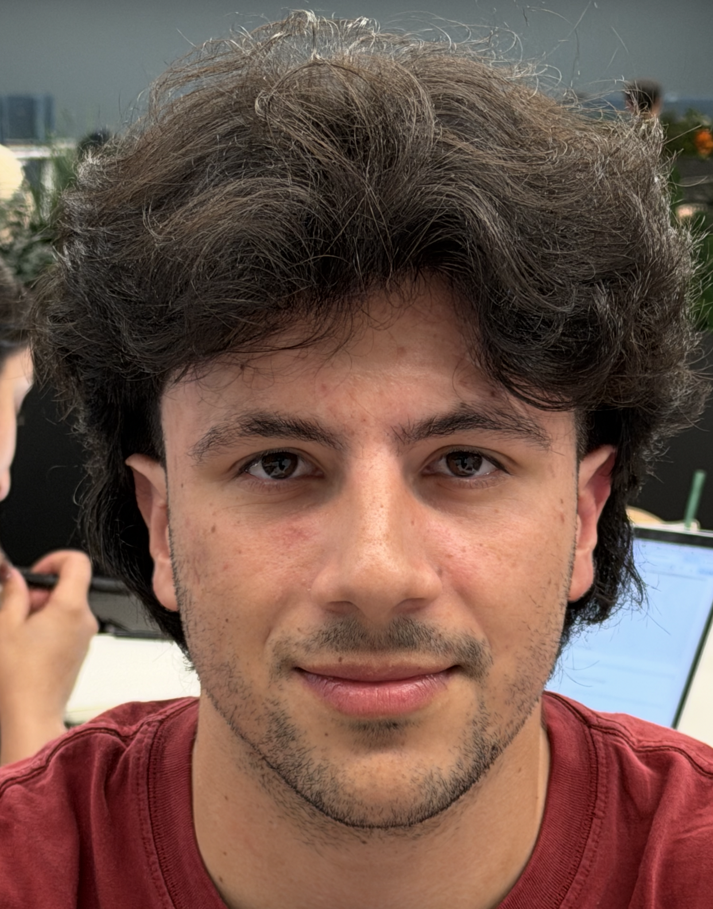
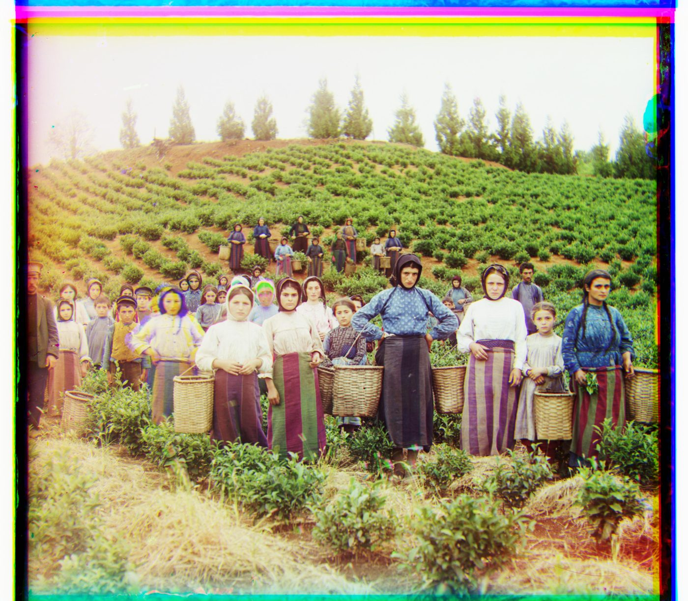
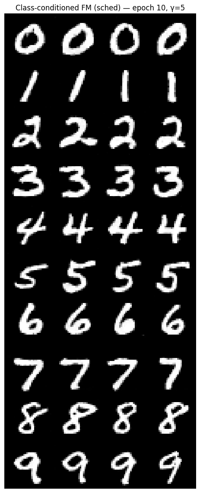

Projects
4 published · more to come
Project 0
The Camera Is Never Neutral
Focal length, distance, and perspective distortion — tested on my own face and a campus building.
Read the write-up →
Project 1
Three Exposures, One Photograph
Colorizing the Prokudin-Gorskii glass plates — NCC alignment, and the image pyramid that makes it fast enough to matter.
Read the write-up →
Project 2
Now You See it, Now You Don't!
Filters and frequencies: edge detection, sharpening, hybrid images, and multiresolution blending.
Read the write-up →
Project 3
From Noise to Pictures
Flow models: denoising, guidance, image editing, visual anagrams, and training flow matching on MNIST from scratch.
Read the write-up →